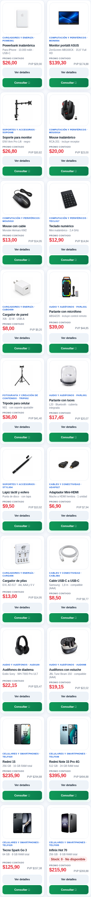

CONECTATECH · título identificable + subtítulo diferenciador
Mismos20SKU y fotografías aprobadas. La tabla separa título actual, primera propuesta, corrección y subtítulo final.
ANTES · primera propuesta no aprobada

DESPUÉS · corrección identificable